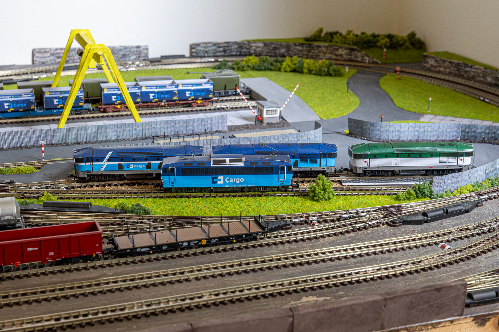

ŽELEZÁRNY / VOZOVÝ PARK
Vozy.
Nákladní vozy pro zásobování hutních provozů i expedici hotových výrobků.
SUROVINY
Vozy do výroby.
Prostor pro vozy se šrotem, rudou, uhlím, vápencem a dalšími materiály potřebnými pro provoz železáren.

VÝROBKY
Vozy z výroby.
Zde mohou být vozy pro svitky, plechy, profily a další hutní výrobky včetně popisu jejich reálného i modelového využití.